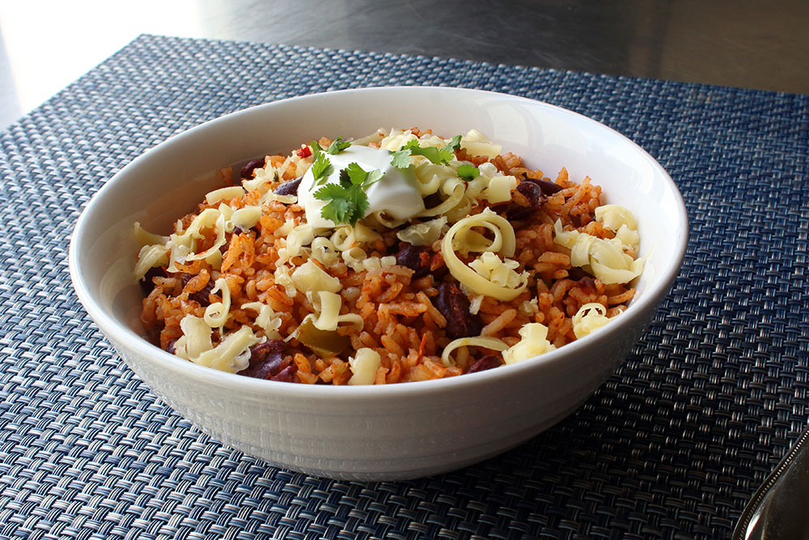

Cuban Rice & Beans

Description
This dish is a fantastic, budget-friendly option that can feed a family of up to 5 for at least two nights,
with plenty of leftover options as well for lunches!
Rice & Beans is a dish known to cultures around the world as a healthy and filling option. The combination of the rice and beans offers a complete protein
while offering an approachably clean slate to add flavors and improvise as you see fit!
Ingredients
- 1 Red Bell Pepper, chopped
- 1 Green Pepper, chopped
- 2 Roma Tomatoes, diced
- 1 Onion, diced
- 2 cloves garlic, minced/chopped into small pieces
- 2 Ham Hocks
- 1 lb dried black beans, soaked overnight
- 1 tsp paprika
- 1 tsp cumin
Directions
- Soak the beans in a large covered pot overnight. Rinse beans well under cold water once starting the recipe.
- In the Instapot, set to saute mode on medium. Add 2 tbsp of olive oil. Once hot, add in the peppers, onion and garlic. Saute for 5 min or until vegetables are softened.
- Once the vegetables are softened, add in the beans, broth, tomatoes, ham hocks, and all spices. Stir to combine.
- Turn off the Instapot. Close the lid and set the little weighted bugger to closed mode. Cook on high pressure for 45 minutes, allowing a natural pressure release
- Serve the finished beans over cooked white rice. Garnish with the chopped cilantro and juice of a lime.